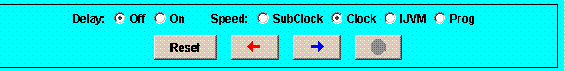

Command Console
Program Operation
... Controls and Views
... ... Command Console
This section describes the operating commands invoked from the Command
Console.
Command Console
 - Delay
- When enabled, visually animates dataflow in the architecture view.
- Speed
- Determines the meaning of a step (i.e. one click of the
 or
or
 button). These speed options permit viewing of system operation
detail at different levels of granularity.
button). These speed options permit viewing of system operation
detail at different levels of granularity. - SubClock
- One subcycle of machine operation is executed with each step.
Dataflow is illustrated in the architecture view. - Clock
- One complete cycle of machine operation is executed with each step.
With Delay On, subcycles are animated in the architecture view. - IJVM
- One complete IJVM operation is executed with each step.
With Delay On, subcycles are animated in the architecture view. - Prog
- Program executes uninterruptedly until Stopped.
With Delay On, cycles are animated in the architecture view (at
high speed).
- Buttons

- Resets the simulator to initial register values.
- Runs one step in reverse.
- Runs one step forward.

- Halts the simulator.